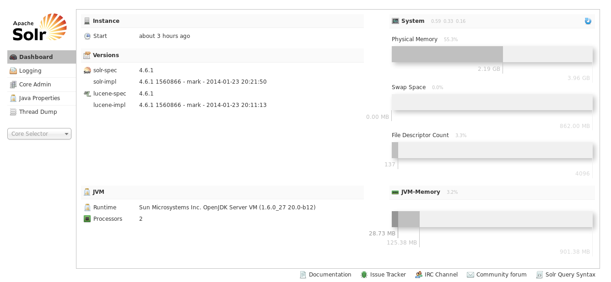
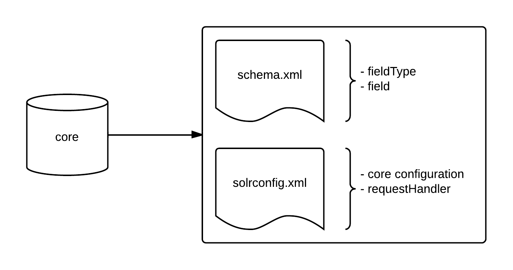
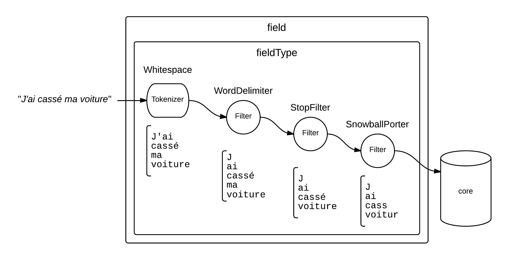

Armand Abric
Développeur chez Virtual-Expo, Marseille
Introduction
Solr ?
Moteur de recherche fulltext utilisant l'algorithme Lucene
= Base de données non relationnelle spécialisée dans la recherche textuelle
Développé par la Fondation Apache
Actuellement en version 4.6.1
Interface d'administration
Communications
API REST en JSON/XML
De nombreuses librairies dans de nombreux languages :
Java, C, Ruby, Python...
...et en PHP :
Une extention PECL...
...et même des bundles Symfony 2
Structure interne Solr
schema.xml
<?xml version="1.0" encoding="UTF-8" ?>
<schema name="store" version="1.5">
<types>
<fieldtype name="string" class="solr.StrField" />
<fieldType name="int" class="solr.IntField" />
<fieldType name="double" class="solr.DoubleField" />
<fieldType name="latLon" class="solr.LatLonType" [...] />
</types>
<fields>
<field name="id" type="int" indexed="true" stored="true" required="true" />
<field name="name" type="string" indexed="true" stored="false" required="true" />
<field name="owner_id" type="int" indexed="true" stored="true" multiValued="true" required="true" />
<field name="coordinates" type="latLon" indexed="true" stored="false" required="true" />
[...]
</fields>
<uniqueKey>id</uniqueKey>
<solrQueryParser defaultOperator="OR" />
</schema>Solr vs SGBD relationnels
Principales différences à l'usage :
- Pas de jointure complexe, mais des jointures simples
- Pas de sous-requêtes
- Transactionnel aux coeurs du logiciel : toutes modifications de données se fait dans une transaction (commit/rollback obligatoire)
- La notion "d'égalité" varie en fonction du core et du champs sur lequel on travaille
- Un changement dans le fichier schema.xml entraine une ré-indexation complète des données
Solr dans le SI
Un moteur de recherche vient en supplément de BDD existantes (relationnelle, NoSQL, fichier...)
Il ne peut pas et ne doit pas remplacer une BDD "long terme"
Indexation
Indexation
L'indexation consiste à stocker des données au sein de Solr
C'est durant cette phase que Solr construit ses index internes qui lui pemettent d'être très performant
Pour indexer des données il suffit de faire une requête HTTP sur un requestHandler d'update du core
Les données doivent être envoyé en XML ou JSON
<add>
<doc>
<field name="id">SP2514N</field>
<field name="name">Samsung SpinPoint P120 SP2514N - hard drive - 250 GB</field>
<field name="cat">electronics</field>
<field name="cat">hard drive</field>
<field name="features">7200RPM, 8MB cache, IDE Ultra ATA-133</field>
<field name="features">NoiseGuard, SilentSeek technology</field>
<field name="price">92</field>
<field name="popularity">6</field>
<field name="inStock">true</field>
</doc>
<doc>
[...]
</doc>
</add>
Le processus d'indexation
Il existe trois méthodes pour gérer l'indexation :
- Full indexation : un bach d'indexation ré-indexe toutes les données à interval régulier
- Indexation incrémentale : un bach d'indexation indexe les changements depuis la dernière indexation
- Indexation en live : lors de la sauvegarde d'une entité dans le reste du SI, on déclanche la mise à jour des données de l'entité au sein de Solr
Aucune n'est parfaite. Il faut choisir en fonction de ses besoins.
Plusieurs de ces techniques peuvent (doivent) être utiliser en paralelle : il est toujours utile de pouvoir ré-indexer tout un core à partir de zéro.
Text analysis
Un vrai fieldType
<?xml version="1.0" encoding="UTF-8" ?>
<!-- [...] -->
<fieldType name="text_en" class="solr.TextField">
<analyzer type="index">
<tokenizer class="solr.WhitespaceTokenizerFactory" />
<filter class="solr.SynonymFilterFactory" synonyms="synonyms_en.txt" ignoreCase="true"
expand="true" />
<filter class="solr.StopFilterFactory" ignoreCase="true" words="stopwords_en.txt"
enablePositionIncrements="true" />
<filter class="solr.WordDelimiterFilterFactory" generateWordParts="1"
generateNumberParts="1" catenateWords="1" catenateNumbers="1" catenateAll="0"
splitOnCaseChange="1" />
<filter class="solr.LowerCaseFilterFactory" />
<filter class="solr.ASCIIFoldingFilterFactory"/>
<filter class="solr.SnowballPorterFilterFactory" language="English" />
</analyzer>
<analyzer type="query">
<tokenizer class="solr.WhitespaceTokenizerFactory" />
<filter class="solr.StopFilterFactory" ignoreCase="true" words="stopwords_en.txt"
enablePositionIncrements="true" />
<filter class="solr.WordDelimiterFilterFactory" generateWordParts="1"
generateNumberParts="1" catenateWords="0" catenateNumbers="0" catenateAll="0"
splitOnCaseChange="1" />
<filter class="solr.LowerCaseFilterFactory" />
<filter class="solr.ASCIIFoldingFilterFactory"/>
<filter class="solr.SnowballPorterFilterFactory" language="English" />
</analyzer>
</fieldType>
<!-- [...] -->
fieldType bis
Une partie du travail de recherche se prépare au moment de l'indexation
Il faut préparer les données pour simplifier le travail de requête :
- nettoyer les caractères spéciaux
- gérer des synonymes
- retirer les balises HTML
- gérer les accents en fonction de la langue
- ...
Va chercher !
Présentation de la synthaxe
http://localhost:8983/solr/[core]/[requestHandler]?[params]Paramètres de base
- q : coeur de la requête de recherche
- fq : clause "where" de filtre des résultats (plusieurs autorisés)
- fl : liste des champs du document a retourner
- rows : limit
- start : offset
- sort : ordonancement des résulats
Requêtes simples
http://localhost:8983/solr/articles/select?q=*:*http://localhost:8983/solr/articles/select?q=content:battlefield
&fl=id,contenthttp://localhost:8983/solr/articles/select
?q=content:(battlefield DICE)
&fl=id,contenthttp://localhost:8983/solr/articles/select
?q=content:"battlefield DICE"
&fl=id,contenthttp://localhost:8983/solr/articles/select
?q=content:"battlefield DICE"~10
&fl=id,contenthttp://localhost:8983/solr/articles/select
?q=content:battlefield AND author_id:2
&fl=id,content,author_idRecherches avancées
Search revelancy
Scoring : Personaliser l'importance des clauses de match de la requête (uniquement le paramètre "q")
http://localhost:8983/solr/articles/select
?q=content:battlefield AND (author_id:2 OR author_id:3 OR author_id:4)
&fl=id,content,author_idFavorisons l'auteur #2 : "author_id:2^100"
http://localhost:8983/solr/articles/select
?q=content:battlefield AND (author_id:2^100 OR author_id:3 OR author_id:4)
&fl=id,content,author_idDebugging et aspirine
Relançons la requête précédente en affichant les informations de débug
"&debugQuery=true"
http://localhost:8983/solr/articles/select
?q=content:battlefield AND (author_id:2^100 OR author_id:3 OR author_id:4)
&fl=id,content,author_id
&debugQuery=true
&indent=trueGrouping
Le groupement Solr est équivalant au groupement SQL
Au détail près que l'on ne peut pas grouper sur le plusieurs champs. Par contre on peut faire plusieurs groupement différent en une requête.
http://localhost:8983/solr/articles/select
?q=content:battlefield
&group=true
&group.field=game_id
&group.limit=3
&fl=id,contentFaceting

Faceting
http://localhost:8983/solr/articles/select
?q=*:*
&rows=0
&facet=true
&facet.field=author_idhttp://localhost:8983/solr/articles/select
?q=*:*
&rows=0
&facet=true
&facet.field=author_id
&facet.limit=3Highlight
Mise en avant des termes recherchés au sein du contenus d'un champs texte.
http://localhost:8983/solr/articles/select
?q=content:battlefield
&fl=contenthttp://localhost:8983/solr/articles/select
?q=content:battlefield
&fl=content
&hl=true
&hl.q=content:battlefield
&hl.fl=content
Exemples d'autre modules
- SpellCheck
- Suggester (aka Autocomplete)
- Recherche spaciale